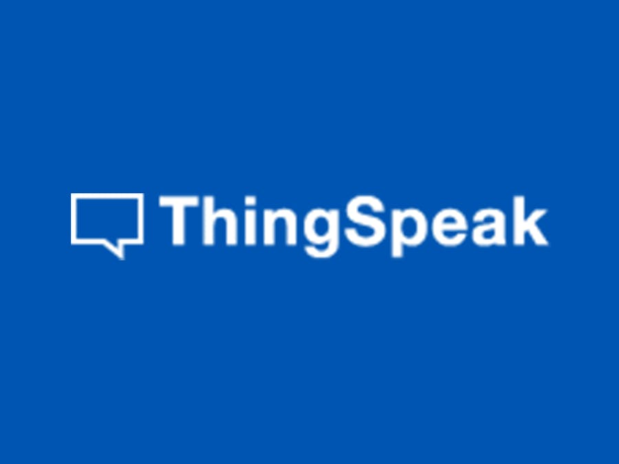

층간소음 알리미 프로젝트
프로젝트에서 사용한 Arduino와 센서 입니다.
대학교 4학년, 마지막 과제인 "캡스톤 디자인" 주제로 제작했던 "층간소음 알리미" 입니다.
Arduino와 MATLAB기반의 데이터 분석을 통해 각 가구의 층간소음을 비교,분석하여
실제 소음 유발 가구의 판별 시스템을 연구한 프로젝트입니다.

아래 내용은 프로젝트 진행에 대해서 크게 상반기(1월 ~ 6월)와 하반기 (7월 ~ 11월)로 나누었습니다.
프로젝트에 관한 자세한 내용은 "Learn More을 통해 볼 수 있습니다."
 1월 ~2월 : 팀원들과 함께 주제를 정하기 위해 두 달동안 4번의 회의를 걸쳐 이웃간의 층간 소음을 줄일 수 있는 무언가를 만들자고 결정.
1월 ~2월 : 팀원들과 함께 주제를 정하기 위해 두 달동안 4번의 회의를 걸쳐 이웃간의 층간 소음을 줄일 수 있는 무언가를 만들자고 결정.
3월 : 소음의 측정 방식은 인접 가정에서 발생하는 소음들을 모두 비교하여 일정 기준치를 넘었음과 동시에 가장 큰 소리를 발생 시킨 가정을 층간 소음 유발가구로 판별하는 시스템을 만드는 방향으로 결정.
또한, 층간소음을 측정하기 위한 하드웨어 선정에 있어, 여러가지 센서를 사용해볼수 있는 아두이노를 기반으로 소리를 측정하고자 결정
4월 : 층간소음의 기춘치를 정확히 측정하기 어려운 에로사항이 발생하였으나, 해당 내용과 관련된 층간소음 법적 기준치, 측정 방식 등을 찾아 문제를 해결.
5월 : 저품질의 센서를 사용하여 소음과 잡음의 구별이 어렵고, 이에 따른 정확한 소음 측정이 불가하였으나, 이는 좀더 높은 사양의 오디오 센서로 변경하여 오차를 최대한 줄이고자 함.
6월 : 소음의 측정은 일부 한계를 제외하고는 층간 소음 측정에 있어 실제 소음 측정기와 유사한 성능을 지닐 정도의 측정이 가능 하게 설계.
또한, 각 가정의 소음을 비교하기 위해 데이터를 한 곳에 수집해야 한다고 판단 되어, WiFi Shield를 추가하면서 이를 통해 서버를 운용하기로 결정.

7월~8월 : 서버를 팀 내에서 운용하기에 팀내 능력 부족을 판단하여, 데이터 수집에 이용할 수 있는 IoT Platform을 찾아 사용하기로 결정.
그 결과, "ThingSpeak"라는 Platform을 이용하여 데이터를 수집하여, 서버에서 층간소음 유발가구를 판별할 수 있도록 MATLAB을 이용하여 프로그래밍을 설계.
9월 : 소음은 매우 짧은 시간동안 측정 되기 때문에 서버층에서 통신을 하는데 제약이 발생하였으나, 약간의 오차를 감수하고 10분간의 측정 데이터를 아두이노가 기억하도록 설계.
10월 : 하드웨어, 소프트웨어 설계를 끝내고 남은 기간동안 테스트를 하면서 오류 수정, 동시에 전시회 장에서 사용될 모형 건물(2층으로 된 4개의 인접가구)을 제작.
11월 : 테스트를 통해 최대한 오류를 줄이고, 무사히 작품 전시회에 출품. 전시장에서 WiFi문제로 인한 통신 문제가 발생 했으나, 빠른 대처로 무사히 프로젝트를 마무리
아래는 프로젝트와 관련된 사진들 입니다.
프로젝트에서 사용한 Arduino와 센서 입니다.

프로젝트에서 사용한 Arduino와 센서 입니다. 총 4개를 사용했습니다.
ThingSpeak를 사용하기 전 그래프 입니다.

ThingSpeak를 이용하여 수집한 소음의 그래프 입니다.

ThingSpeak를 이용하여 수집한 소음의 그래프 입니다.

작품 전시회에서 사용한 모형입니다.

작품 전시회에서 사용한 모형입니다.

작품 전시회에서 사용한 모형입니다.

작품 전시회에서 은상을 수상했습니다.

작품 전시회에서 은상을 수상했습니다.
{kind=link}